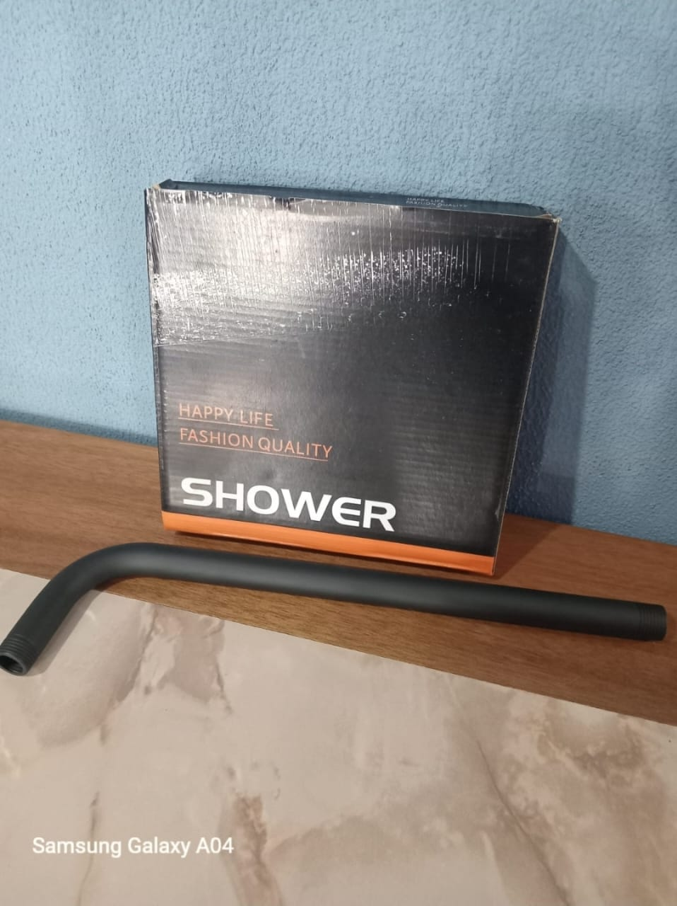

Prueba de Imágenes desde GitHub
Imagen 1 - Local
images/1.jpg
Imagen 2 - Local
images/2.jpg

Imagen con fixImageUrl - Solo nombre de archivo
Cargando...
Imagen con fixImageUrl - Ruta relativa
Cargando...